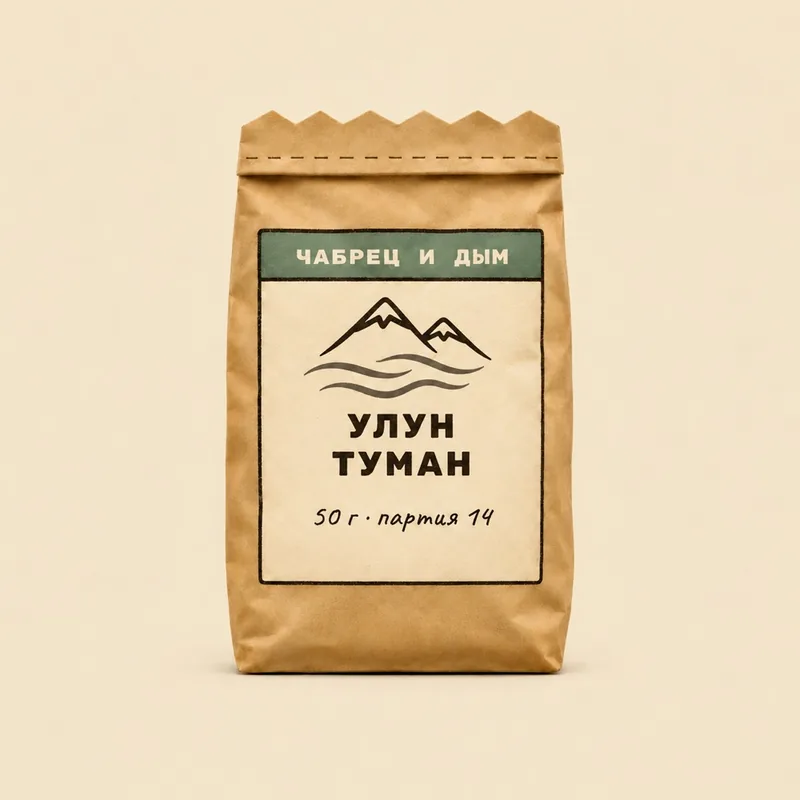

Улун · 50 г
Улун «Туман»
Светлый улун, выдерживает до пяти проливов. Сливочный вкус, цветочное послевкусие.
- Состав
- Светлый улун
- Заваривание
- 90 °C, 3 мин, 5 г на 200 мл, до 5 проливов
760 ₽Купить

Улун · 50 г
Светлый улун, выдерживает до пяти проливов. Сливочный вкус, цветочное послевкусие.
Демо-проект, компания вымышленная. Названия, составы и цены придуманы для портфолио.